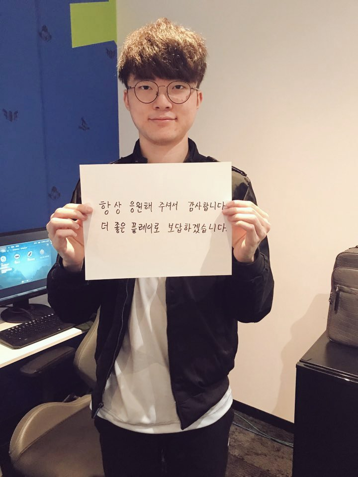

2013 LCK 스프링 시즌에 18세라는 나이로 데뷔한 2세대 프로게이머[13]
오랫동안[14] 엄청난 경기력과 결과를 선보이며 군림해온 역대 최고의 리그 오브 레전드 플레이어 및 미드라이너[15], 전 세계 e스포츠 역사상 압도적인 인기와 지명도 및 커리어를 가진 정점에 위치한 선수[16]이자 T1의 프랜차이즈 간판 스타이다.그 중 롤과 관련한 전 세계 해설진과 캐스터진 그리고 자국 리그인 LCK 관계자에게도 평판이 매우 높다.[17]
게임 해설가 김동준의 언급처럼 단 한 번도 자신의 실력에 대해서 자기 입으로 뽐낸 적은 없지만 이후 다른 사람이 내린 평가를 통해 역사상 최고 미드 라이너이자 역대 최고의 리그 오브 레전드 프로게이머로 불리게 되었다는 점을 근거로 들 수 있다.[18]과거 LCK 1세대 프로게이머 선수였던 클템은 한 인터뷰에서 아예 페이커를 역대 최고 미드 라이너에서 배제하는 전문가가 만약 있다면 그 사람은 전문가 타이틀을 내려놓아야 한다고 언급했고[19] 지금까지 큰 무대에서 줄곧 증명해온 페이커에 대해 존중하는 모습을 보였다.
강승현 해설, 전 세계 리그 오브 레전드와 관련된 각 지역별 스타 플레이어를 비롯한 수많은 현역 선수들, 역사를 쓴 전설들 및 패널들을 포함한 각종 롤 관계자들, 특히 한국 e스포츠 분야에서 높은 관록을 지닌 전용준과 성승헌 캐스터 및 스타크래프트계의 전설적인 인물인 강민 역시 LCK에서 해설가로 활동했던 시절에는 앞선 이들과 비슷하게 역시 해설 도중 탄성을 자아내거나 고평가적인 언급을 자주 했었다. 과거 한국 롤판의 슈퍼스타 계보를 논할 때 LCK 초창기 시절 롤판에 센세이션을 일으켰던 매드라이프[20]의 뒤를 이어 그 이상의 퍼포먼스를 자아내며 세계적인 일약 슈퍼스타가 되었으며, 이후부터 오랜 시간 동안 3대 슈퍼스타에게 그 지위를 물려주지 않고 있다.